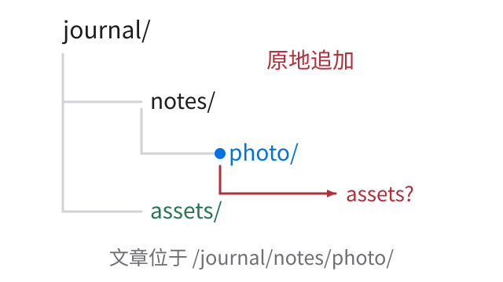
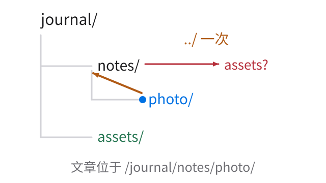
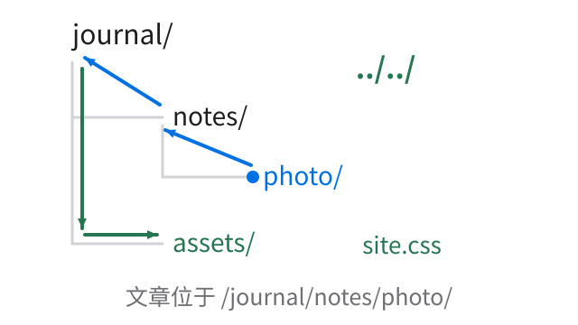
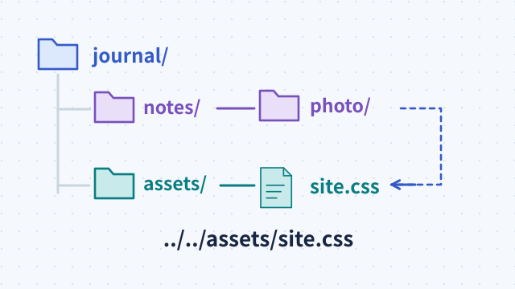

一个静态网站可以只由 HTML、样式表、图片和脚本组成。浏览器拿到 HTML 后，还会按其中的地址继续取样式和图片。因此，文章能打开但版式消失，经常是第二次请求走错了地方。
一页文章在服务器上是什么
假设发布目录里有首页 index.html，另外有 assets/site.css 和 notes/photo/index.html。许多静态服务器会把以斜杠结尾的目录请求映射到该目录的 index.html。所以访问 /notes/photo/ 可能得到一份完整文章，即使浏览器地址栏没有显示文件名。是否提供这项目录索引，由服务器配置决定。
URL 中的协议、主机、可选端口共同决定来源，路径说明要取这个来源下的哪个资源。把文件从本机桌面挪到某个 HTTP 服务，浏览器看到的基础 URL 也变了。测试时从 HTTP 入口打开页面，才会覆盖服务器的目录索引、资源类型和缺失文件处理等实际行为。
浏览器解析下一条链接时依据的是当前文档的基础 URL。它不认识你的编辑器工作目录，也不知道哪层文件夹在本机叫作“项目根目录”。若 HTML 中声明了 base 元素，基础 URL 还会发生改变。没有声明时，可以先从地址栏里的最终 URL 推算。
在两个目录里手算同一条引用
设站点入口为 https://example.org/journal/，样式表位于这个入口下的 assets/site.css。首页写 assets/site.css 时，浏览器从 /journal/ 往下找，得到 /journal/assets/site.css，符合目录布局。
现在打开文章页 https://example.org/journal/notes/photo/。同样写 assets/site.css，结果就变成 /journal/notes/photo/assets/site.css。若要指向同一份样式，应从文章目录向上两层，再进入 assets，写成 ../../assets/site.css。先去掉 photo，再去掉 notes，剩下正好是 /journal/。
沿目录树走两步再取样式
站点挂在 /journal/ 子路径。树上有文章目录和共享 assets 目录；从蓝点出发解析三种写法。

不向上就留在文章目录
查看大图
地址栏中的文章目录是 /journal/notes/photo/。相对引用 assets/site.css 不带向上标记，浏览器会直接接到这个目录后面，得到文章目录下的 assets。图中红色分支就是这个被请求的位置，已经偏离共享样式所在的目录。

一次向上只去掉 photo
查看大图
换成 ../assets/site.css 时，第一个 .. 只把当前目录 photo 去掉，基础位置来到 notes。再追加 assets，仍得到 notes/assets/site.css。不要把 .. 理解为“自动回项目根目录”：它只处理路径的一个层级。

两次向上回到 journal
查看大图
第二个 .. 再去掉 notes，基础位置才回到 /journal/。随后进入 assets，就找到了共享样式表。因此这个例子的引用写作 ../../assets/site.css。若改成以 / 开头，则会直接从域名根目录开始，反而绕过 journal；相对路径和根路径不能凭外观互换。
先找文档的基础 URL，再按相对引用逐段移动。站点部署在子路径时，直接从域名根目录出发的写法未必指向相同资源。
小练习：若页面变为 /journal/notes/，取 /journal/assets/site.css 需要几个 ../？
只需要一个。先从 notes 回到 journal，再进入 assets，写作 ../assets/site.css。这里假设没有另行指定 HTML 的 base 元素。
还有一种写法以斜杠开头，例如 /assets/site.css。它从域名根目录寻找，因此在站点挂在 /journal/ 时会绕过这一层。它在域名根目录部署的站点上可能工作得很好，搬到子路径以后才暴露问题。URL 的尾部是否有斜杠同样重要，/journal/ 与 /journal 对相对地址的解析基准并不完全相同。
可以在浏览器开发者工具的控制台把“基础地址＋相对引用”直接交给 URL 构造器。它只在本地解析字符串，不必发出网络请求。先预测 /journal/notes/photo/ 向上两层的结果，再比较输出，是学习相对路径的一个小型单元测试。
new URL("../../assets/site.css", "https://example.org/journal/notes/photo/").href
// https://example.org/journal/assets/site.css

问号和井号各自归谁处理
例如 /journal/notes/?group=vision#camera。问号后的查询参数随 HTTP 请求送往服务器，静态页面里的脚本也能读取它，并据此恢复所选主题。井号后的片段通常由浏览器处理，不作为这次 HTTP 请求路径的一部分。页面里若有 id 为 camera 的元素，浏览器可以滚动到那里。
换新地址时要考虑旧书签。只复制文件，未必保留用户原先选中的分类和段落。若服务器要兼容旧路径，先规划从旧地址到新地址的映射，再分别测试普通页面、带查询的页面和带锚点的页面。生成站点时保持段落 id 稳定，也能减少改标题带来的意外断链。
用浏览器检查真实路径
直接在地址栏输入最深的一篇文章，刷新后打开开发者工具的网络面板，查看样式表和首张图片的 Request URL、状态码及响应内容类型。如果样式表请求返回 200，但正文其实是一份回退首页的 HTML，浏览器仍无法把它当成正确的 CSS。
再从首页点击同一篇文章，与直接访问的结果比较。最后手动复制一条带查询和锚点的链接到新标签页，看选项和段落是否恢复。这三个入口分别检验首页导航、深层链接和可分享状态，能覆盖许多只在本地双击 HTML 时难以发现的问题。